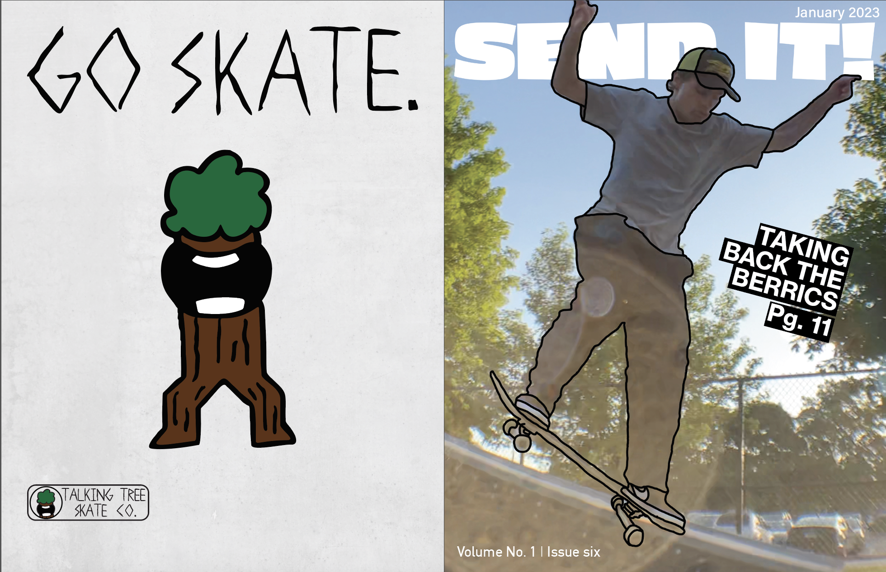
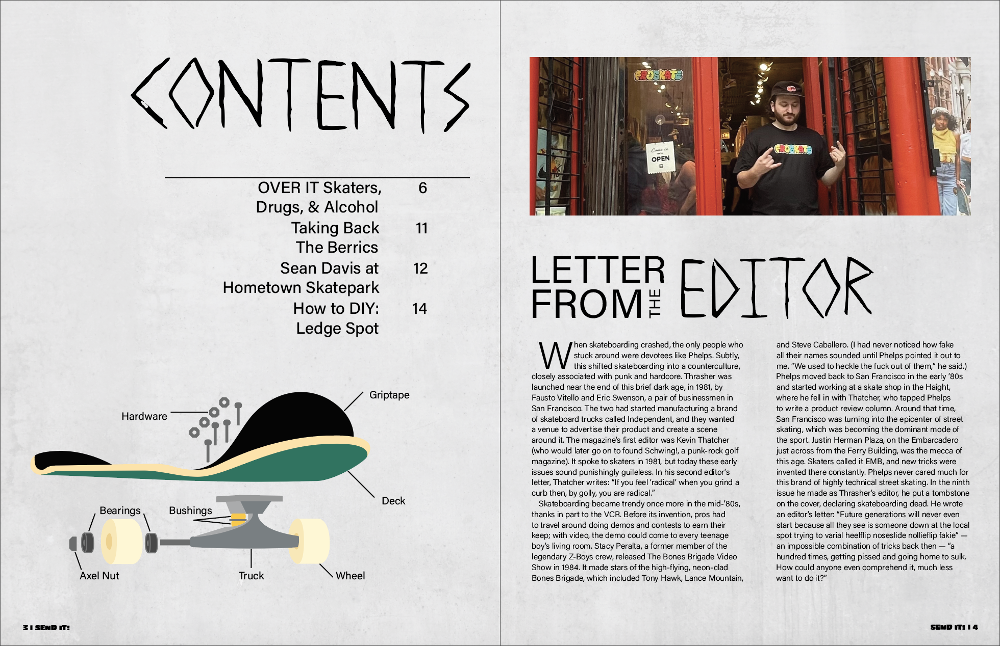
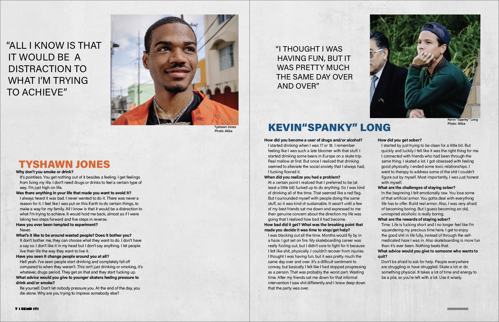
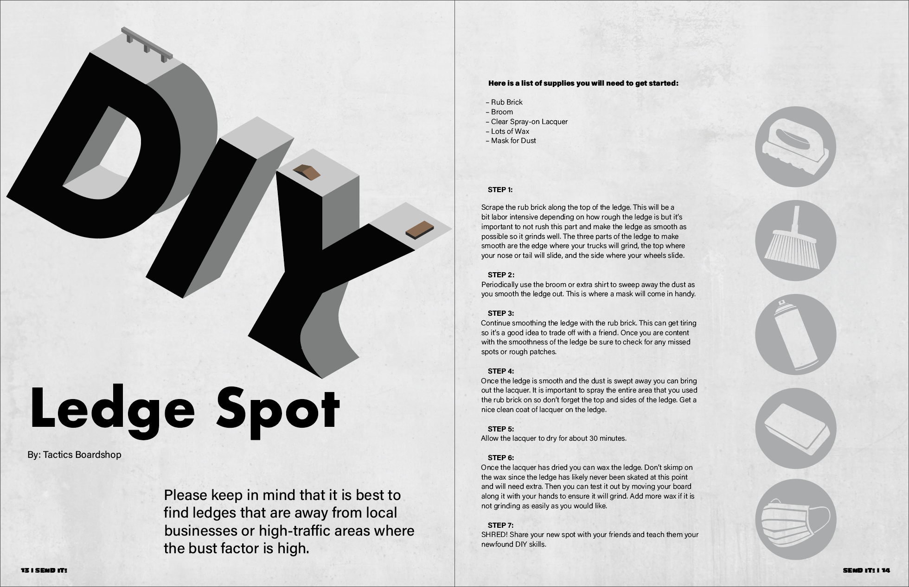

ART 227 — Graphic Design II, Spring semester 2022, Adobe Illustrator, 11x17 inches
For this project, we were instructed to pick a topic regarding any subject we were interested in. We had to include well-established design standards in our publication including, typography, color, imagery (photographs and illustrations), and graphic elements (e.g., patterns, textures, icons). Additionally, we were instructed to combine these features of elements in our cover pages to make them more dynamic and eye-catching. While creating my skateboarding magazine I made it much more interesting and creative than a traditional skateboarding magazine since they are traditionally just type and images. By providing things like iconography, infographics, illustrations, textures, and other aspects I was able to create a more vibrant, but not overly chaotic, magazine that got the important information across to the reader.
   